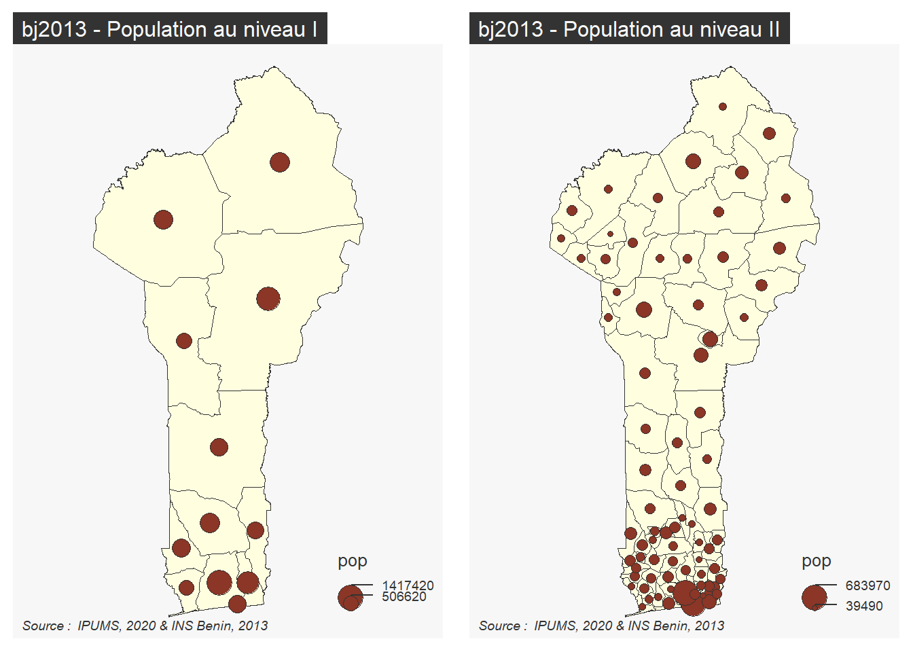
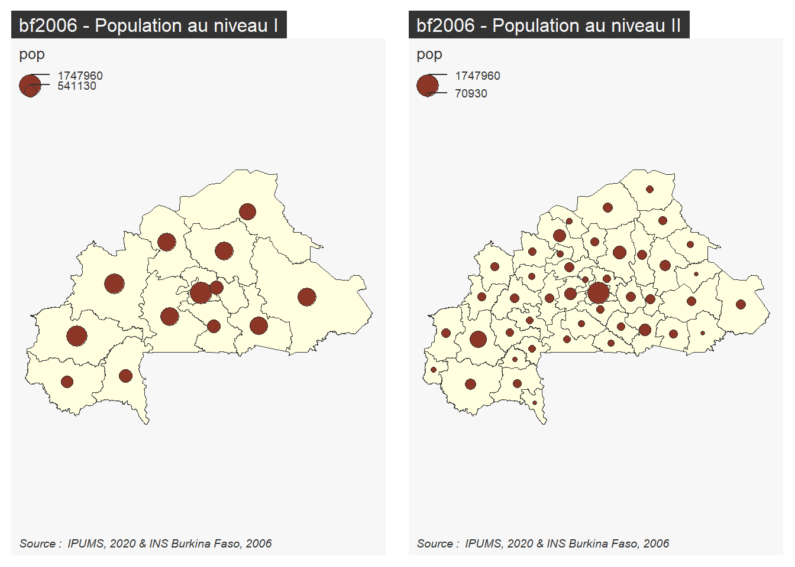
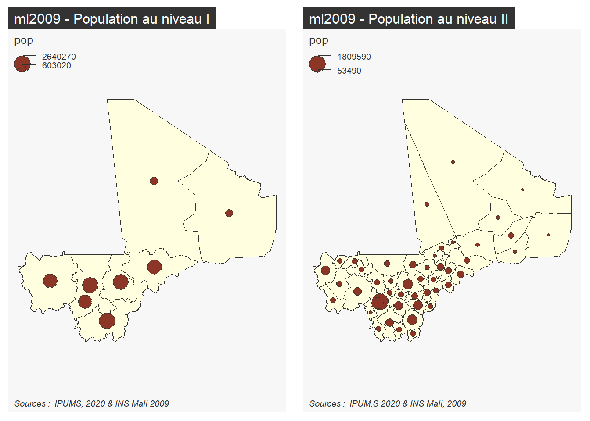
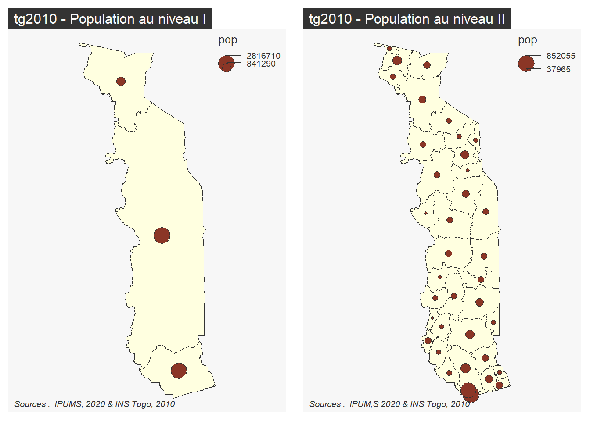
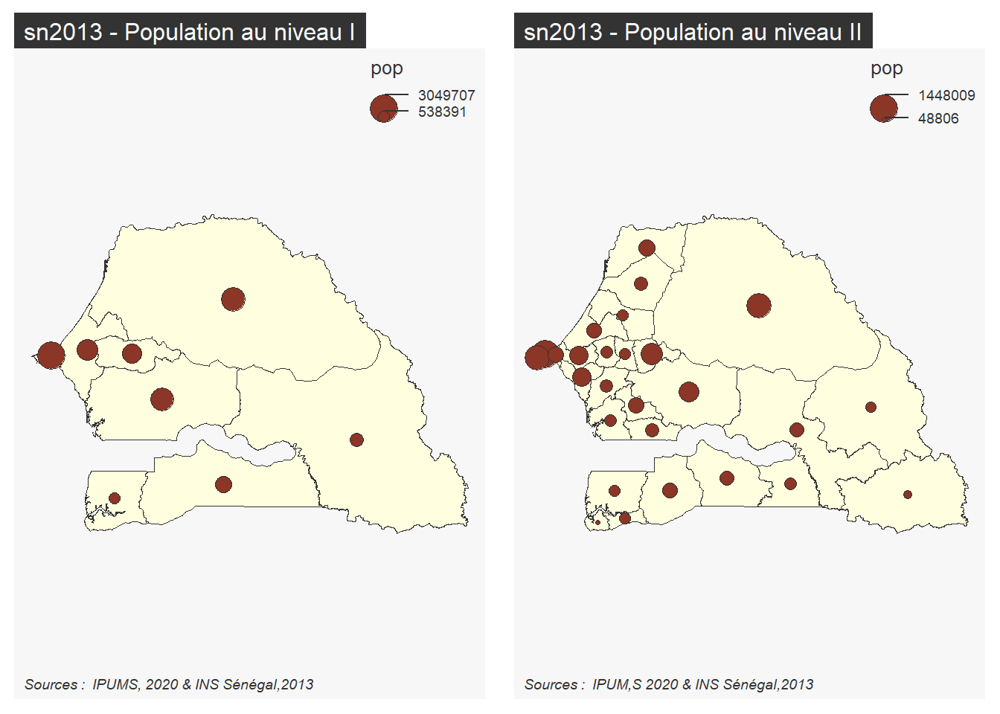

Le premier exemple de création d’indicateur concerne l’établissement de cartes de densité ce qui suppose de mobiliser à la fois les données individuelles (pour agréger la population) et les données géographiques (pour calculer la superficie).
library(knitr)library(dplyr)
Attachement du package : 'dplyr'
Les objets suivants sont masqués depuis 'package:stats':
filter, lag
Les objets suivants sont masqués depuis 'package:base':
intersect, setdiff, setequal, union
library(sf)
Linking to GEOS 3.9.1, GDAL 3.4.3, PROJ 7.2.1; sf_use_s2() is TRUE
library(mapsf)library(RColorBrewer)
4.1 Agrégation de la population
Une question intéressante concerne la marge d’erreur du calcul des populations selon que l’on part d’un échantillon plus ou moins dense (ici, à 1 pct ou 10 pct). Ce point méritera d’être discuté avec les spécialistes de statistique inférentielle du projet. Nous nous bornerons ici à calculer les indicateurs tirés de l’échantillon à 10%
On calcule pour chacune des unités territoriales de niveau I ou II la somme des individus pondérée par le poids des ménages (HHWT) et on stocke le résultat dans un dossier commun à tous les recensments appelés all. Ceci évitera d’avoir à refaire le calcul dans les étapes suivantes.
## Chargement des donnéesrp <-readRDS(file ="ipums/rp/samp10pct.RDS")## Calcul des populations au niveau administratif Ipop1<-rp %>%group_by(GEOLEV1) %>%summarise(POP=sum(HHWT)) %>%mutate(GEOLEV1 =as.character(GEOLEV1))saveRDS(pop1, "indic/all/POP_LEV1.RDS")## Calcul des populations au niveau administratif IIpop2<-rp %>%group_by(GEOLEV2) %>%summarise(POP=sum(HHWT)) %>%mutate(GEOLEV2 =as.character(GEOLEV2))saveRDS(pop2, "indic/all/POP_LEV2.RDS")
4.2 Jointure avec les géométries
On va maintenant procéder à la jointure des données avec les fonds de carte puis stocker ces derniers enrichis par la population au format sf. On crée pour cela une procédure semi-automatique qu’on va applique au RP Bénin 2013 et qui sera ensuite répliquée sur les autres recensements étudiés.
4.2.1 Bénin, RP 2013
library(sf)census="bj2013"refmap="bj1979_2013"# --------------- Niveau administratif I ----------------------## Load populationpop1<-readRDS("indic/all/POP_LEV1.RDS")## Read Geometry and create codemap1<-readRDS(paste0("ipums/geom/geo1_", refmap,".RDS")) %>%rename(GEOLEV1=GEOLEVEL1)## Joinmapdon1<-left_join(map1,pop1) %>%select(code = GEOLEV1,nom = ADMIN_NAME,pays = CNTRY_NAME,pop = POP,geometry = geometry)%>%filter(nom !="Unknown") %>%st_make_valid()
Joining, by = "GEOLEV1"
## SavesaveRDS(mapdon1,paste0("indic/",census,"/","pop_lev1_",census,".RDS"))# --------------- Niveau administratif II ---------------------- ## Load populationpop2<-readRDS("indic/all/POP_LEV2.RDS")## Read Geometry and create codemap2<-readRDS(paste0("ipums/geom/geo2_", refmap,".RDS")) %>%rename(GEOLEV2=GEOLEVEL2)## Joinmapdon2<-left_join(map2,pop2) %>%select(code = GEOLEV2,nom = ADMIN_NAME,pays = CNTRY_NAME,pop = POP,geometry = geometry)%>%filter(nom !="Unknown") %>%st_make_valid()
Joining, by = "GEOLEV2"
## SavesaveRDS(mapdon2,paste0("indic/",census,"/","pop_lev2_",census,".RDS"))# Vérificationpar(mfrow=c(1,2))mf_map(mapdon1, type="base", col="lightyellow")mf_map(mapdon1,type="prop", var="pop",inches =0.1)mf_layout(title =paste(census,"- Population au niveau I"),credits ="Source : IPUMS, 2020 & INS Benin, 2013",scale =FALSE, arrow=FALSE)mf_map(mapdon2, type="base", col="lightyellow")mf_map(mapdon2,type="prop", var="pop",inches =0.1)mf_layout(title =paste(census,"- Population au niveau II"),credits ="Source : IPUMS, 2020 & INS Benin, 2013",scale =FALSE, arrow=FALSE)

4.2.2 Burkina Faso, RP 2006
Joining, by = "GEOLEV1"
Joining, by = "GEOLEV2"

4.2.3 Mali, RP 2009
Joining, by = "GEOLEV1"
Joining, by = "GEOLEV2"

N.B. : il a fallu supprimer un polygone vide concernant les valeurs “Unknown” et réparer la géométrie d’une unité en appliquant la fonction st_make_valid() du package sf.
4.2.4 Togo, RP 2010
Joining, by = "GEOLEV1"
Joining, by = "GEOLEV2"

N.B. : il a fallu supprimer un polygone vide concernant les valeurs “Unknown” et réparer la géométrie d’une unité en appliquant la fonction st_make_valid() du package sf.
4.2.5 Sénégal, RP 2013
Joining, by = "GEOLEV1"
Joining, by = "GEOLEV2"

4.3 Calcul des superficies et densités
Maintenant que les variables de population sont incluses dans un fichier sf, on peut y ajouter la superficie à l’aide d’un simple calcul géométrique et en déduire la densité de population des unités territoriales. Le calcul des superficies est évidemment légèrement entaché d’erreur puisqu’il dépend de la précision du fonds de carte. Ainis, dans le cas Bénin, nous trouvons une superficie de 115768 km2 alors que la valeur donnée par la Banque Mondiale est de 114760 km2.
4.3.1 RP Bénin, 2013
library(sf)census="bj2013"# calcul des indicateurs au niveau Imap1<-readRDS(paste0("indic/",census,"/","pop_lev1_",census,".RDS"))map1$sup<-as.numeric(st_area(map1)/(1000*1000))map1$den<- map1$pop/map1$supsaveRDS(map1, paste0("indic/",census,"/","popsup_lev1_",census,".RDS"))# calcul des indicateurs au niveau IImap2<-readRDS(paste0("indic/",census,"/","pop_lev2_",census,".RDS"))map2$sup<-as.numeric(st_area(map2)/(1000*1000))map2$den<- map2$pop/map2$supsaveRDS(map2, paste0("indic/",census,"/","popsup_lev1_",census,".RDS"))# Vérificationmybreaks=c(0,5,10,20,40,80,160,320,10000)mycols =brewer.pal(8,"YlOrBr")par(mfrow=c(1,2))mf_map(map1,type="choro", var="den",breaks=mybreaks,pal=mycols,leg_title ="hab./km2",leg_val_rnd =0)mf_layout(title =paste(census,"- Densite de population au niveau I"),credits ="Sources : IPUMS, 2020 & INS Bénin,2013",scale =FALSE, arrow=FALSE)mf_map(map2,type="choro", var="den",breaks=mybreaks,pal=mycols,leg_title ="hab./km2",leg_val_rnd =0,lwd=0.3,border ="gray80")mf_map(map1,type="base", add=T,lwd=1,col =NA,border="black")mf_layout(title =paste(census,"- Densite de population au niveau II"),credits ="Sources : IPUMS, 2020 & INS Bénin,2013",scale =FALSE, arrow=FALSE)